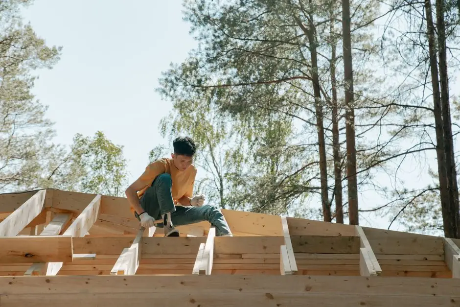

Residential Roofing in Dickinson
Residential roofing demand in Dickinson is shaped by the community's diverse housing styles and family priorities. Homeowners often seek durable, energy-efficient solutions that can withstand local weather conditions. Our roofing services in Dickinson cater to these needs effectively.
- Asphalt shingle installation — Asphalt shingles are popular among Dickinson homeowners for their affordability and durability. We ensure proper installation to maximize their lifespan.
- Roof leak repairs — Roof leaks can cause significant damage if not addressed quickly. Our team specializes in prompt leak repairs to protect your home.
- Regular maintenance plans — We offer maintenance plans that help homeowners in Dickinson keep their roofs in top condition, preventing costly repairs down the line.
- Energy-efficient roofing options — Homeowners are increasingly looking for energy-efficient roofing solutions. We provide options that enhance insulation and reduce energy costs.